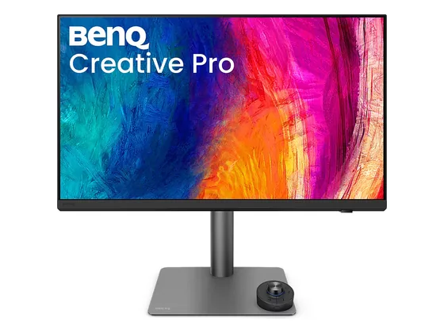
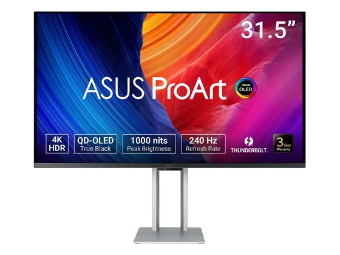
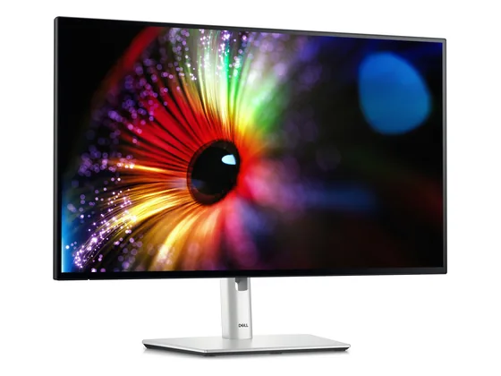
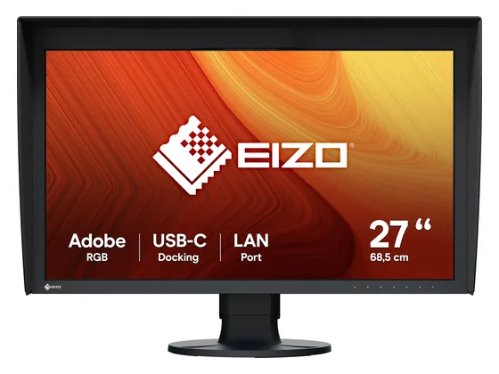

BenQ PD2732U : avis, tests et prix
Le verdict en une phrase. Un 4K de 27 pouces couvrant à la fois le DCI-P3 et l'Adobe RGB, avec Thunderbolt 4 et un mode couleurs Mac : très précis, un peu cher.
N° 7 sur 10 dans le top 10 Écrans PC création.

Pour qui ?
Vous travaillez sur Mac en photo ou en impression et avez besoin de l'Adobe RGB.
Vous cherchez un écran polyvalent pour jouer : 60 Hz seulement.
Le consensus de la presse
Les tests recensés ne donnent pas de note chiffrée : nous renvoyons vers les articles plutôt que d'inventer une note.
Où l'acheter
La configuration peut différer d'un marchand à l'autre : vérifiez la fiche avant d'acheter. Seuls les liens Amazon sont affiliés à ce jour ; les autres sont de simples liens directs. Aucun n'influence les notes ni le classement.
Tous les tests recensés
Chaque ligne renvoie vers le test d'origine. Les notes sont converties sur 10 ; « test » signale un article sans note chiffrée. Notre méthode.
- MacGenerationtest
- Tom's Guidetest
Les alternatives pour le même usage
Tout le top 10 →
Asus ProArt PA32UCDMUn QD-OLED 4K calibré pour la création, excellent en SDR comme en HDR, avec Thunderbolt 4. Plus cher que les OLED gaming équivalents. N° 6 · Le contraste IPS Black
Dell UltraSharp U2724DLa dalle IPS Black de Dell, plus contrastée qu'un IPS classique, avec 98 % du DCI-P3 et 120 Hz : un très bon écran pour la photo et le travail. N° 8 · La référence pro
Eizo ColorEdge CG2700SL'écran des laboratoires photo : sonde de calibration intégrée, uniformité contrôlée, garantie longue. Une précision de référence, à un prix de pro.Questions fréquentes
Que pense la presse de l'écran BenQ PD2732U ?
2 tests presse recensés, sans note chiffrée. Un 4K de 27 pouces couvrant à la fois le DCI-P3 et l'Adobe RGB, avec Thunderbolt 4 et un mode couleurs Mac : très précis, un peu cher.
Quels sont les points faibles relevés par les tests ?
Prix élevé pour une dalle 60 Hz ; Testé sans note chiffrée.
À qui s'adresse le modèle BenQ PD2732U ?
Vous travaillez sur Mac en photo ou en impression et avez besoin de l'Adobe RGB. À éviter si : vous cherchez un écran polyvalent pour jouer : 60 Hz seulement.
Où l'acheter, et à quel prix ?
Comptez environ 570 € (prix indicatif constaté en octobre 2026). Nous l'avons trouvé en vente chez Amazon. Les prix changent vite et la configuration peut différer d'un marchand à l'autre : seul le prix affiché par le marchand fait foi.